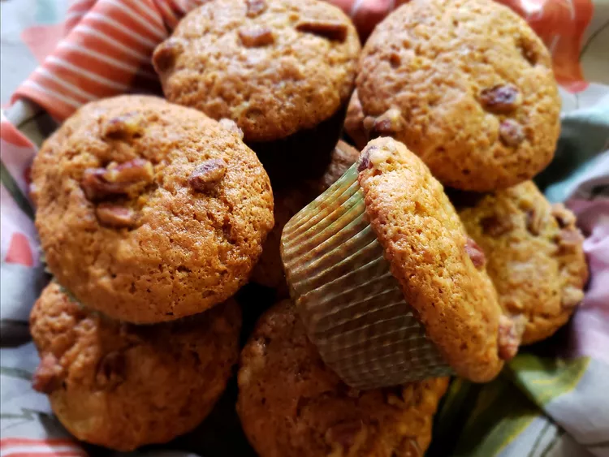

Ingredients
- 1 cup white sugar
- 1/2 cup vegetable oil
- 1 large egg
- 3 ripe bananas, mashed
- 1/4 cup chopped walnuts
- 2 cups all-purpose flour
- 1 teaspoon baking soda
- 1/2 teaspoon salt
Directions
- Preheat the oven to 350°F (175°C). Grease a 12-cup muffin tin or line cups with paper liners.
- Mix sugar, oil, and egg in a large bowl until light and creamy.
- Stir in bananas and walnuts.
- Add flour, baking soda, and salt. Stir until completely smooth.
- Spoon batter into the muffin cups, filling each about 3/4 full.
- Bake until tops spring back when lightly pressed, about 30 to 40 minutes.